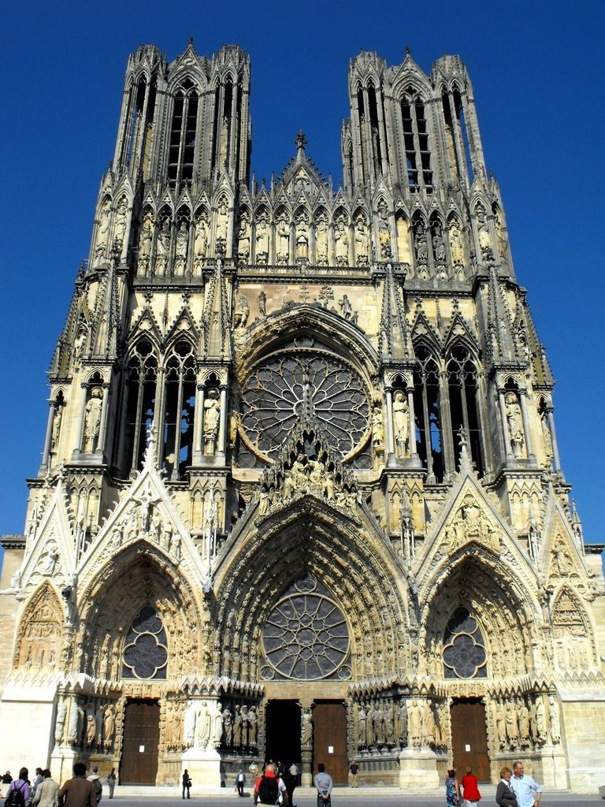

Pinturas e Esculturas
Desde a arte rupestre de Lascaux até movimentos como o Impressionismo (Monet, Renoir) e Cubismo (Picasso, Braque)
Pintura de arte da Avenue d Eylau em Paris França

Alta gastronomia
Reconhecida mundialmente, com tradição desde o século XVII e vários restaurantes com estrelas Michelin.
Petit Gateau

Arquitetura
Histórica: Catedrais góticas (Notre-Dame), castelos (Vale do Loire) e o Palácio de Versalhes.Moderna e contemporânea: Le Corbusier, Jean Nouvel e ícones como o Centro Pompidou e a Pirâmide do Louvre
Catedral de Reims
